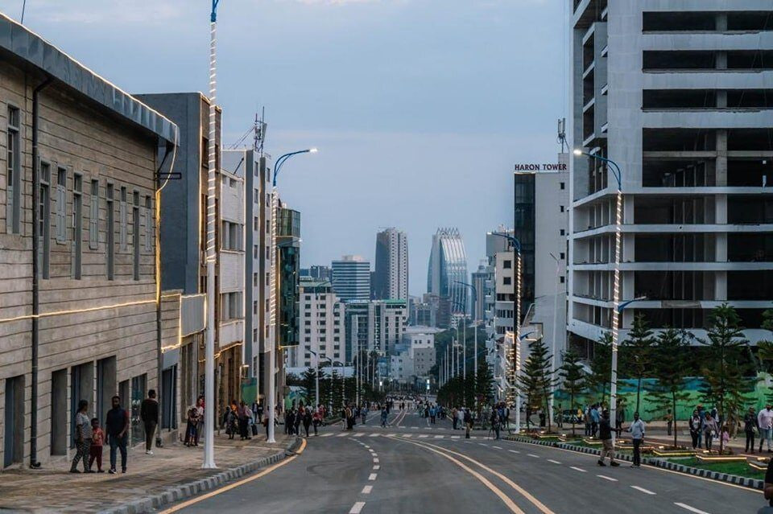
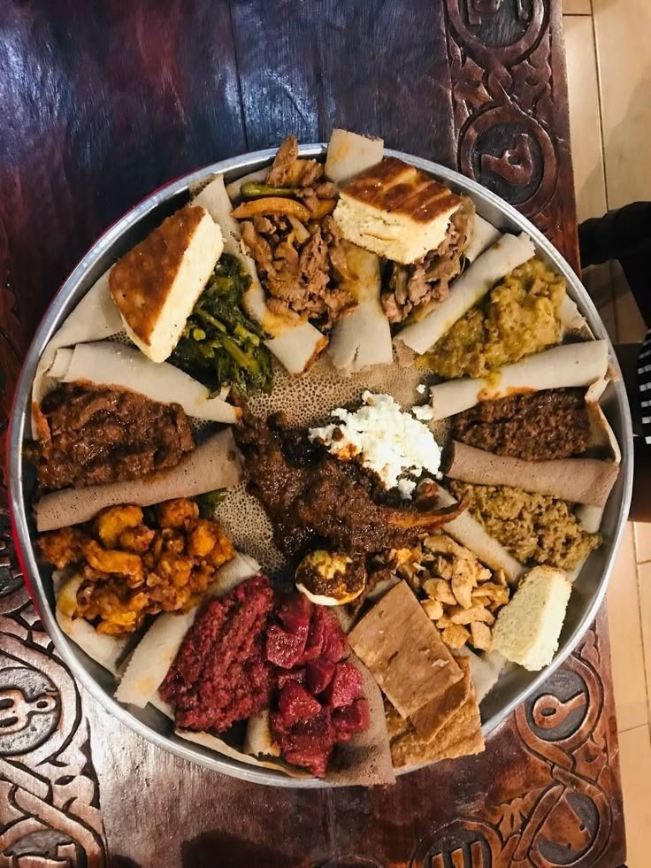
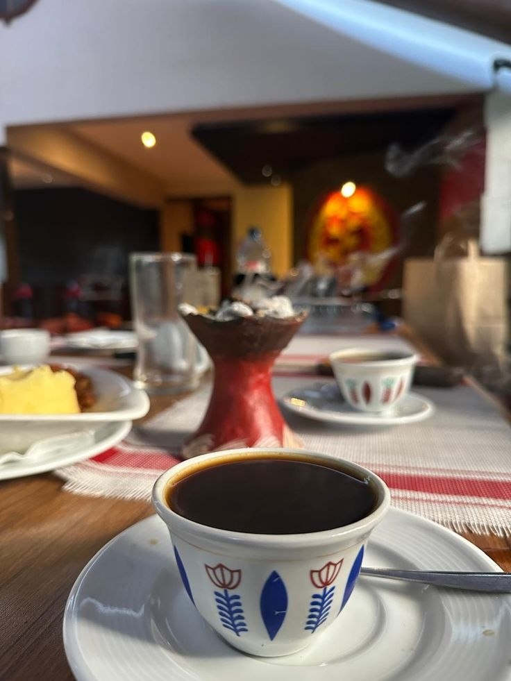
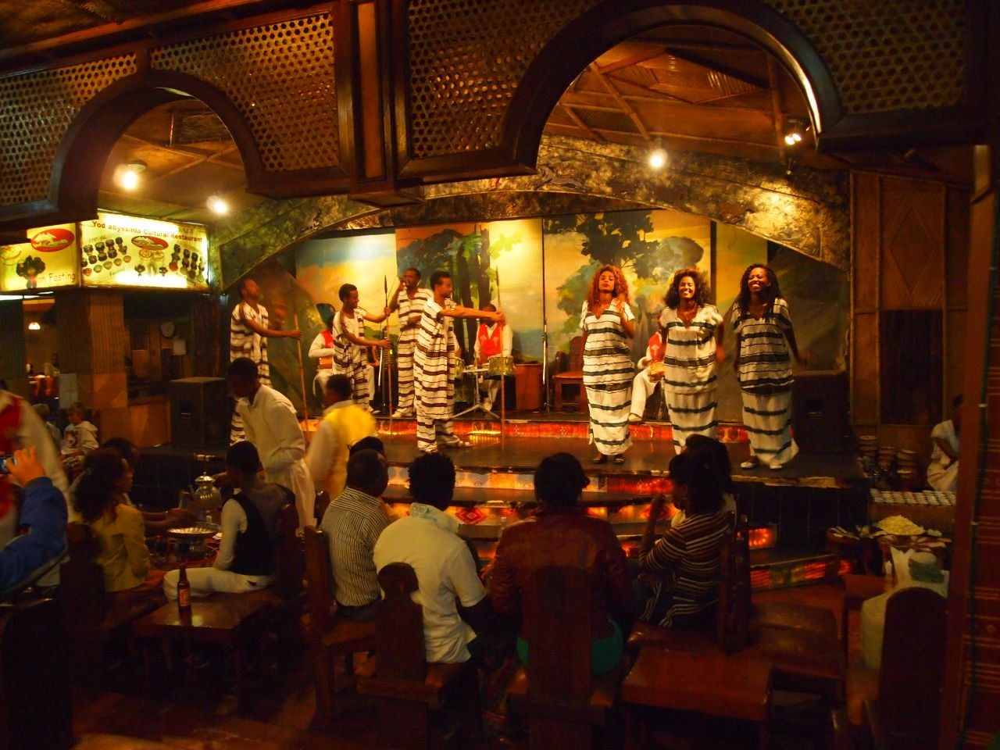
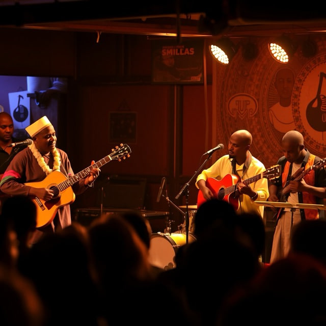

Places to Explore
Find places that tell the story of the capital, from public spaces to museums and landmarks.
SOUL OF ADDIS
Stories, places, and traditions of Ethiopia's capital
A city of stories, culture, and connection.
From lively streets and historic landmarks to traditional food and the coffee ceremony, discover the many experiences that make Addis Ababa special.
Explore the city | Start discovering

Explore different parts of the city's identity through these topics.
Find places that tell the story of the capital, from public spaces to museums and landmarks.

Learn about local dishes, ingredients, and the food traditions shared with family and friends.

Discover the coffee ceremony and the hospitality, conversation, and community around it.

Explore the traditions, stories, and historical moments that shape the city's identity.

Find out about cultural celebrations and activities that bring people together.
Addis Ababa is the capital of Ethiopia. Its name is commonly translated as New Flower. The city is an important centre for government, culture, education, and international organizations.
The city brings together different communities, traditions, historic places, and modern urban life. Exploring these different sides helps visitors understand more about Ethiopia and its capital.
Have a place, tradition, or experience you think should be featured?
This is a front-end demonstration form. It does not send or store submissions yet.